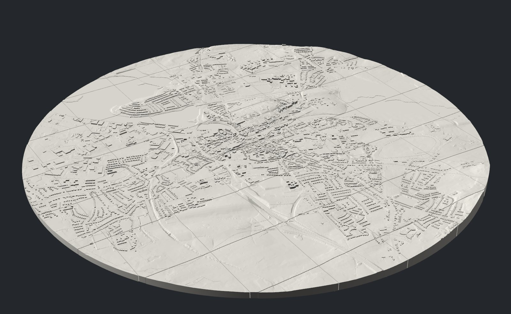
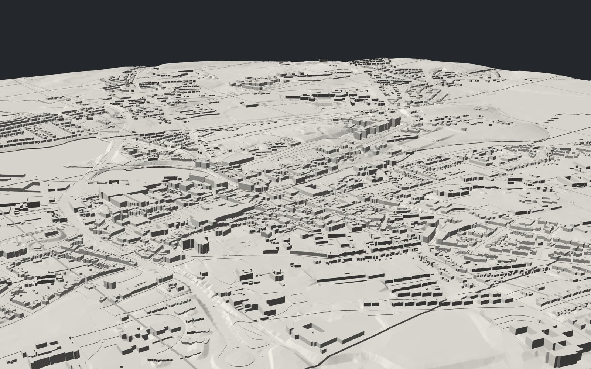

A white model of Sligo, one Irish mile out from Lady Erin in every direction, printed at 1:2500. A projector above it lights the river, the bay and the town's data; a kiosk beside it lets anyone raise the water and ask what it reaches.
The old borough of Sligo reached one Irish mile, 2,048 metres, out from the centre of the town. Boundary stones still mark where it crossed the roads. This model takes that circle, centred on the 1798 Lady Erin monument on Market Street, and prints it in white plastic as 52 tiles held together by magnets.
The ground is a 2006 survey of the town, with its gaps filled from the OPW's 2011 lidar. Every building is its own footprint at its own height. Roads are cut in a third of a millimetre so the projector can draw them, and the river, harbour, bay and the edge of Lough Gill sit a little below their banks.
A proposed road and bridge across the Garavogue can be swapped in and out: six alternative tiles carry it.

Lift the sea or Lough Gill and watch the model light up where it would reach, with a count of the buildings and homes it touches. Then ask the town: vacancy, energy ratings, deprivation, who lives near the water.
Open the kiosk →A projector pointing straight down lays the kiosk's answers onto the tiles. The page corrects for the height of the model, so the light lands on the hills rather than beside them.
Set up the projector →Drag a square anywhere in the borough and download it as a 3D-print tile for the Bambu P1S, a laser-cut contour kit or a contour map, from the same data as the model.
Make a model →
The 2027 conference asks what architecture might become when the circumstances we design for can no longer be assumed to stay still. Sligo sits where a river, a lake and the Atlantic meet. Its quays, bridges and low streets were built around a particular relationship with water, and that relationship is changing.
The kiosk's water scenarios spread water over the ground from the sea or from Lough Gill and show what lies below each level and can be reached. They are an illustration for discussion, not a flood forecast. They ignore tides, defences, drainage and how long a flood lasts. For official flood maps, see floodinfo.ie.